首页
愿我们的友谊
天长地久！
还记得我们第一次踏进校门
第一次
写作业
第一次
被老师批评
第一次
“借鉴”作业
第一次
偷吃零食
眨眼间六年已至
一年级时每个人都在盼望“快点毕业”
而如今，每个人都盼望“慢点毕业”
一年级
陌生
二年级
朋友
三年级
伙伴
四年级
知己
五年级
兄弟/闺蜜
六年级
分别
时光匆匆，终点亦是起点，新的希望，新的挑战。莫等闲，白了少年头，空悲切！
 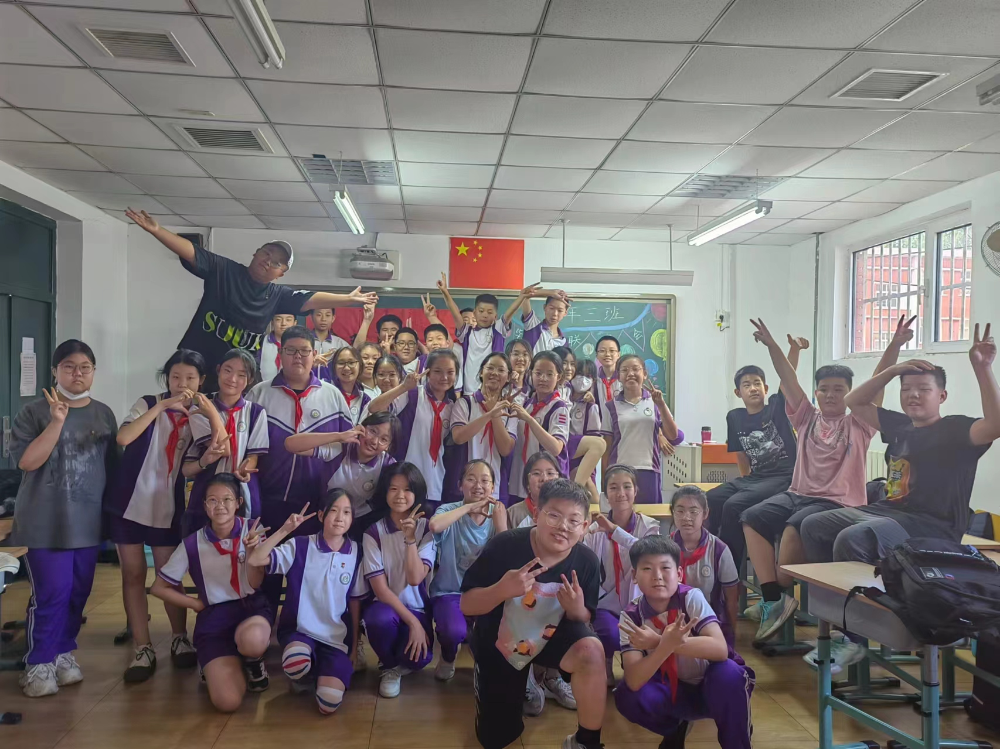
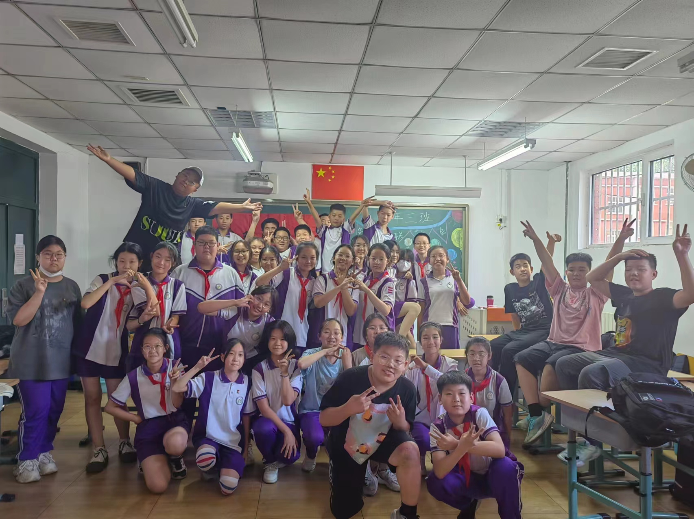
寄语与口头禅(斜体为口头禅）

赵常宏：我们相识于盛夏 别于盛夏 不知以后何时再见 但要相信 分久必合 合久必分 愿你们都能所愿
甚经
 张宇硕：
张宇硕：
你再叫一个，再竖中指，把你中指切了
杨文博：
你们俩真是个卧龙凤雏
金姿含：那便祝各位 此去一帆风顺 天官赐福 百无禁忌
我推晚宁天下第一！！！！！
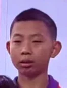冯跃：
五图当老鼠，有父还有母
王书瑶：欲买桂花同载酒，终不似，少年游。始于一场初秋，终于一场盛夏。风华正茂，你我年皆少，愿你们前途似海，来日方长。
你没逝吧？
 徐洋：
徐洋：
你什么意思呀！
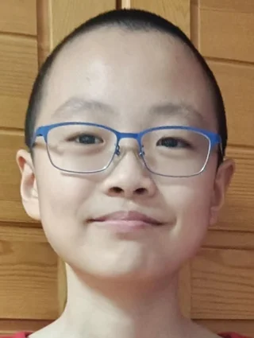冯悦桐：祝大家身体健康，万事如意，福如东海，前程似锦，都能考上理想的中学
你妈妈喜欢吃什么
 李梓冉：祝我们的友谊到永久=)
李梓冉：祝我们的友谊到永久=)
你↗有↗*↘吧~
 宋婉冰：六年的时光匆匆如影，挥手不带走一片美好的回忆，而那六年的回忆，也永远停留在我们的心里
宋婉冰：六年的时光匆匆如影，挥手不带走一片美好的回忆，而那六年的回忆，也永远停留在我们的心里
我推妹叔怎么了！我买周边怎么了？
张哲铭：书上说过，天下没有不散的宴席，但你别怕，书上还说过，人生何处不相逢，将军不下马，各自奔前程，愿你们有一双翅膀去拥抱美好的未来
不是小猫牢弟你有啥实力呀！
杨明雪：落魄谷中寒风吹 春秋蝉鸣少年归 荡魂山处石人泪 定仙游走魔向北
我要三科成绩好！！！
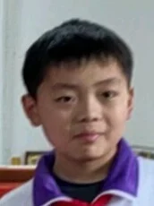杨依辰：祝未来的你们前途似海，向自己的梦想去努力！加油！少年！
一万暴击
 牛艺璇：前程似锦，有缘再见~
牛艺璇：前程似锦，有缘再见~
神井饼
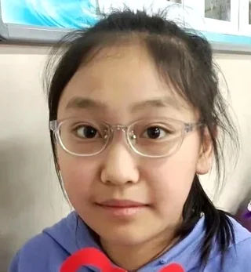张思琪：
叶舒华宝宝太美了。
 张恒瑞：光阴如梭 六年的时光转眼间就过去了 马上就要和小学说再见 要步入中学了 我们是一团火 散是满天星 虽然要毕业了 但是以后要常聚
张恒瑞：光阴如梭 六年的时光转眼间就过去了 马上就要和小学说再见 要步入中学了 我们是一团火 散是满天星 虽然要毕业了 但是以后要常聚
我去你大爷的
 马钰骁：那时候天总是很蓝，日子总是过得太慢，你总说毕业遥遥无期，转眼间却各奔东西
马钰骁：那时候天总是很蓝，日子总是过得太慢，你总说毕业遥遥无期，转眼间却各奔东西
我勒个豆啊
 王艺霏：毕业了，让我们挥手再见，说一声珍重，道一声祝福，感谢彼此曾经的美好回忆，珍藏彼此真挚的友情，愿你前程似锦！
王艺霏：毕业了，让我们挥手再见，说一声珍重，道一声祝福，感谢彼此曾经的美好回忆，珍藏彼此真挚的友情，愿你前程似锦！
我*
单过：转眼间我们六年过去了，从中我们得到了很多友情和快乐，如果一切都可以倒流，我更想从一年级开始！但愿每个人能考上自己理想的初中、前途无量、前程似锦、所向披靡，加油吧！
我*你*
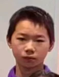吁磊：
你懂啥！！
 王雨欣：花有重开日，人无在少年
王雨欣：花有重开日，人无在少年
什金
 白晗钰：世界之大，为何我们相遇？希望多年以后，你们不会忘记我。
白晗钰：世界之大，为何我们相遇？希望多年以后，你们不会忘记我。
我勒个豆
陈梓晗：我不想说再见 更不想说再见 我只想说 你别忘了——我
我起呗
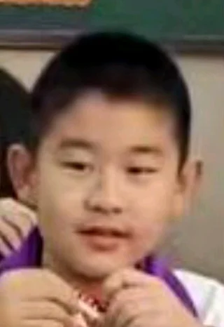刘宇栋：
哎呦我，直接给我**
 申雨萱：
申雨萱：
？芙宁娜怎么你了？园丁怎么你了？我推芙宁娜园丁怎么你了？就你会叫？什么麻子姐别叫了大哥
 刘可昕：
刘可昕：
饿死了~
 俞帅君：努力学习努力向上，做最好的自己
俞帅君：努力学习努力向上，做最好的自己
我*你*！祝你身体健康，万事如意（我**你*了个**的，你全家**）
 谢雨彤：是终点，也是起点，愿你我继续前行，也愿友谊天长地久
谢雨彤：是终点，也是起点，愿你我继续前行，也愿友谊天长地久
我担岩哥票房大麦、一路长虹！岩居川观百年好合！mini好可爱~~~
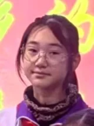田奕绫：雪花乱飞的季节，我们也曾陷入迷茫和困惑，感到孤独和凄凉，但我们毕竟走了过来
我推天下第一！！！
徐可馨：
家人们我真的栓Q了
 张贯桀：In new school,take good care of yourseif.（在新的学校，照顾好自己。）
张贯桀：In new school,take good care of yourseif.（在新的学校，照顾好自己。）
What's up?
 冯旭东：时光不老 我们不散
冯旭东：时光不老 我们不散
不（布）是！
 王雅涵：祝6年3班身体健康，万事如意，天天开心，心想事成。
王雅涵：祝6年3班身体健康，万事如意，天天开心，心想事成。
你有*啊！
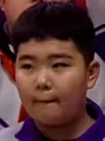毛浩晨：祝你们前程似锦，考一个理想的学校，金榜题名，天天向上，永远阳光开朗。
我是秦屎皇，V我50，当我占领六国，我封你为铲屎工，清理茅坑。
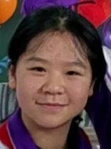白玉：满怀希望就会所向披靡
莫？
 张宸宇：虽然我们即将分离 但我们永远不会解散 书上说过“万事皆有缘”，祝大家在新的学校里天天开心，学习步步高升，平安喜乐。咱们顶峰再见！
张宸宇：虽然我们即将分离 但我们永远不会解散 书上说过“万事皆有缘”，祝大家在新的学校里天天开心，学习步步高升，平安喜乐。咱们顶峰再见！
不是牢弟你有啥实力啊！别叫了 我直接就**
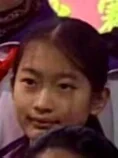彭钰涵：照片太小 框不住我们的六年.
私宅
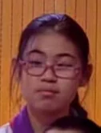李立家：一路走好今天
*